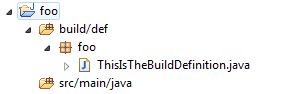
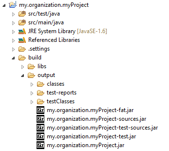

Enjoy the Jerkar tour !
This page gives a concrete idea on how Jerkar is working and what you can do with.
Principles
Jerkar is quite simpe in its principle. You write a class extending org.jerkar.tool.JkBuild in the build/def directory of your project then you can execute any public zero arg methods from the command line by executing jerkar myMethod1 myOtherMethod at the project root directory. To accomplish this, Jerkar :
- Compiles every java sources found under the [PROJECT DIR]/build/def folder.
- Instantiates the first compiled class found implementing
org.jerkar.tool.JkBuild. If none theorg.jerkar.tool.builtins.templates.javabuild.JkJavaBuildclass is instantiated. - Invokes specified methods on the created instance. If no method is specified then the
doDefaultmethod is invoked.
You can also set instance fields from the command line by typing jerkar myMethod -myField=foo.
Concretely your Java project is structured as :

And ThisIsTheBuildDefiniotion code may look like this :
class ThisIsTheBuildDefiniotion extends JkBuild {
@JkDoc("Run tests in forked process if true")
boolean forkTests;
File src = file("src");
File buildDir = file("build/output");
public void compile() {
JkJavaCompiler.ofOutput(classDir).withClasspath(classpath).andSourceDir(src).compile();
JkFileTree.of(src).exclude("**/*.java").copyTo(classDir);
}
...
}
From this starting point you can discover a lot from Jerkar. The following section illustrates different options for writing or not build classes.
Build Class styles
With Jerkar you can write task based build classes (ala Ant), templated ones (ala Maven) or rely on conventions only (no build class needed).
Using the tutorial section 5, you can easily set-up sample projects that illustrate the snippet displayed below.
Task Based Build Classes (ala Ant)
If you like to have complete control over your builds, you may prefer the Ant build style.
The price is that you have to write explicitly what your build is doing.
This example mimics the tutorial ANT build script
public class AntStyleBuild extends JkBuild {
@JkDoc("Run tests in forked process if true")
boolean forkTests;
String name = "myProject";
File src = file("src");
File buildDir = file("build/output");
File classDir = new File(buildDir, "classes");
File jarFile = new File(buildDir, "jar/" + name + ".jar");
String className = "my.MainClass";
JkClasspath classpath = JkClasspath.of(baseDir().include("libs/*.jar"));
File reportDir = new File(buildDir, "junitRreport");
@Override
public void doDefault() {
clean();jar();run();
}
public void compile() {
JkJavaCompiler.ofOutput(classDir).withClasspath(classpath).andSourceDir(src).compile();
JkFileTree.of(src).exclude("**/*.java").copyTo(classDir);
}
public void jar() {
compile();
JkManifest.empty().addMainClass("my.main.RunClass").writeToStandardLocation(classDir);
JkZipper.of(classDir).to(jarFile);
}
@JkDoc("Run the application")
public void run() {
JkJavaProcess.of(jarFile).andClasspath(classpath).runSync();
}
public void cleanBuild() {
clean();
junit();
}
public void junit() {
jar();
JkUnit.of(classpath.and(jarFile))
.withClassesToTest(JkFileTree.of(classDir).include("**/*Test.class"))
.withReportDir(reportDir)
.withReport(JunitReportDetail.FULL)
.forked(forkTests)
.run();
}
public static void main(String[] args) {
JkInit.ofInstance(AntStyleBuild.class, args).doDefault();
}
}
From this build definition, we can execute Jerkar the following way :
- Launch/debug the
AntStyleBuild mainwithin your IDE. - Launch/debug the
org.jerkar.tool.JkMain mainmethod within your IDE. In this mode you can pass arguments as you would do with command line. - Execute a command line in a shell (or on a build server) as
jerkar doDefaultorjerkar cleanBuild -forkTests=true.
Templated Build Classes (ala Maven)
For Java projects you may directly extend JkJavaBuild template class which implements common methods for you.
All you need is to implement what is specific.
public class MavenStyleBuild extends JkJavaBuild {
@Override // optional
public JkModuleId moduleId() {
return JkModuleId.of("org.jerkar", "script-samples");
}
@Override // optional
protected JkVersion version() {
return JkVersion.ofName("0.3-SNAPSHOT");
}
@Override
// Optional : needless if you use only local dependencies
protected JkDependencies dependencies() {
return JkDependencies.builder()
.on(GUAVA, "18.0") // Popular modules are available as Java constant
.on(JERSEY_SERVER, "1.19")
.on("com.orientechnologies:orientdb-client:2.0.8")
.on(JUNIT, "4.11").scope(TEST)
.on(MOCKITO_ALL, "1.9.5").scope(TEST).build();
}
}
This example is for demo purpose. Some settings can be omitted by respecting naming conventions...
Templated Build Classes with Conventions
If you follow conventions (as project folder named as groupName.projectName and version stored in a version.txt file), the above script turns to :
public class BuildSampleClassic extends JkJavaBuild {
@Override // Optional : needless if you use only local dependencies
protected JkDependencies dependencies() {
return JkDependencies.builder()
.on(GUAVA, "18.0")
.on(JERSEY_SERVER, "1.19")
.on("com.orientechnologies:orientdb-client:2.0.8")
.on(JUNIT, "4.11").scope(TEST)
.on(MOCKITO_ALL, "1.9.5").scope(TEST).build();
}
}
Build relying fully on conventions
If your project uses local file dependencies only (jar dependencies located as below), you don't even need to write a build definitions.
Note that local file dependencies have to be located in sub-folder corresponding to its scope (build, compile, runtime,...).

Build relying on Eclipse metadata
If Eclipse is your IDE, you can just reuse information from the .classpath file by using the Eclipse plugin.
Project name, source folders and dependencies can be deducted from this file. Just activate the Eclipse plugin (see below).
Build Classes dependending on third party libraries.
Your build class can depend itself from managed dependencies
@JkImport("org.seleniumhq.selenium:selenium-java:2.45.0")
public class SeleniumTaskBuild extends JkJavaBuild {
@JkDoc("Performs some load test using Selenium")
public void seleniumLoadTest() {
WebDriver driver = new FirefoxDriver();
// ....
}
}
Multi-project Builds
In a multi project context, build instances, from different projects, can use each other.
You just have to declare the "slave" build instance as field and annotate it with the @JkProject mentioning the "slave" project relative path.
The annotated field is instantiated and configured when the "master" build is instantiated so you can invoke any of the "slave" methods in your "master" build class.
// This is the master project for building the Jerkar full distribution
public class DistribAllBuild extends JkBuild {
@JkProject("../org.jerkar.plugins-sonar")
PluginsSonarBuild pluginsSonar;
@JkProject("../org.jerkar.plugins-jacoco")
PluginsJacocoBuild pluginsJacoco;
public void doDefault() {
super.doDefault();
multiProjectDependencies().invokeDoDefaultMethodOnAllSubProjects();
CoreBuild core = pluginsJacoco.core; // The core project is got by transitivity
JkFileTree sourceDir = ...;
sourceDir.importFiles(pluginsSonar.packer().jarSourceFile(), pluginsJacoco.packer().jarSourceFile());
...
}
}
Features offered by build classes
If your build class extends JkJavaBuild or you have no build class at all (build relying fully on conventions), then you have invoke the following tasks :
Basic Tasks
jerkar help: outputs on console available methods and options for Jerkar in the current project.jerkar clean: clean the output directory that is [project dir]/build/output.jerkar compile: compile the production code (not the test code) and put resources in [project dir]/build/classes directory.jerkar unitTest: compile the unit tests and run it.jerkar pack: creates jars from the compiled sources and processed resources (creates test, sources and fat jar as well).jerkar verify: launch code quality tools on the sources : by default this does not do anyhing unless you activate some quality control plugin (see below).jerkar publish: publish the produced artifact in the remote repository.jerkar scaffold: create a Jerkar project struture from scratch, including the build class. If root folder has already a pom.xml file then Jerkar will reuse pom.xml information to generate build class accordingly.
Beside convenient methods are available to launch a 'life-cycle' sequence :
jerkar doCompile=jerkar clean compile.jerkar doUnitTest=jerkar doCompile uniTest.jerkar doPack=jerkar doUnitTest pack.jerkar doVerify=jerkar doPack verify.jerkar doPublish=jerkar doVerify publish.
Whitout omitting the shorthands :
jerkar=jerkar doDefault=jerkar doPack
These tasks can be parametrized :
jerkar -pack.fatJar=true -tests.fork=true=jerkar doPack+ forking the unit tests and produce a fat jar
The last will result in the following artifact creation :

Plugin Tasks
Template classes (JkBuild and JkJavaBuild) enable pluggability by featuring methods with extension points.
A plugin is just a class extending JkBuildPlugin or JkJavaBuildPlugin and overriding default hook methods. Plugins can also provide their own methods.
- To activate a plugin on the command line, just mention the name of the plugin followed by a
#. - To parameter a plugin, just mention
-pluginName#fieldName=value. - To launch a method of a plugin, just mention
-pluginName#methodName, note that the plugin does not need to be activated for invoking a plugin method. - To display information about available plugins in current Jerkar instance, simply execute
jerkar helpPlugins.
Examples
Jerkar is shipped with Eclipse, Jacoco and SonarQube plugins out of the box.
This is how you can leverage these plugins :
jerkar jacoco#: doesdoDefaultbut unit tests will be instrumented by Jacoco code coverage tooljerkar jacoco# -jacoco#produceHtml: same but also set theJkBuildPluginJacoco#produceHtmlfield totrue. It leads in producing an html report along the standard jacoco.exec binary reportjerkar doDefault sonar#verify: does the default + execute theverifymethod located in the sonar plugin (launch a sonar analysis)
Analysis is launched on a local SonarQube server unless you specify specific Sonar settings. Sonar will leverage of jacoco reportjerkar doDefault verify sonar# jacoco#: launches thedoDefaultandverifymethods and activates the jacoco and sonar plugins. Sonar plugin hooks theJkBuild verifymethod by launching a SonarQube analysis
Build API
Jerkar framework comes with a fluent style API making a joy to perform all kind of thing generally encountered in build domain.
Almost all classes coming from this API are immutable providing a high degree of robustness and reusability.
The follow will give you some ideas of what you can accomplish with this API. To have more insight, please visit Javadoc.
File Manipulation & Selection
The JkFileTree class allow to define a set of files having a common root folder and to performs numerous operation on.
The following code, show how to construct a war file from dispersed elements.
JkFileTree war = JkFileTree.of(warDir).importDirContent(webappContentDir)
.from("WEB-INF/classes").importDirContent(build.classDir())
.from("../lib").importFiles(JkFileTree.of(libDir).include("**/*.jar");
war.zip().to(warFileDest);
from method returns another JkFileTree but rooted at the specified relative path.importXxx method copies specified element at the root of the file tree.
JkFileTreeSet, JkPath (sequence of files), JkZipper, JkFileFilter and JkUtilsFile are the other players for manipulate files.
All belong to org.jerkar.api.file package.
Process Launching
The JkProcess class provides super easy way to launch external process.
The follow show how to launch a Maven process on the project located at projectBaseDir.
JkProcess.of("mvn", "clean","install","-U")
.andParameters(JkOptions.isVerbose(), "-X")
.withWorkingDir(projectBaseDir)
.failOnError(true)
.runSync();
Java Core Stuffs
Classpaths
JkClasspath allows to construct class-paths and perform queries or get string representations.
For example, the follow creates a classpath taking in account all jar under the extraLibs folder,
then returns the first one containing the my.SearchedClass class.
File jar = JkClasspath.of(lib1, lb2, lib3).getEntryContainingClass("my.SearchedClass");
Class Loarders
JkClassloader allows to get or construct class-loaders then scan the class-path or invoke methods within.
For example, the follow get the current class loader and loads every class having a package starting by com.mypack
JkClassLoader.current().loadClasses("com/mypack/**/*");
This class provides also methods to perform cross class-loader calls friendly.
Running Java Programs
JkJavaProcess is a Java specific flavor of JkProcess.
JkJavaProcess.of().withWorkingDir(myWorkingDir)
.andClasspath(mtClasspath).runJarSync(myJarFile);
Java Build API
Jerkar provides Fluent API for addressing build of Java projects.
Compile Java
The JkJavaComiler helps to compile Java sources.
JkJavaCompiler.ofOutput(classDir).withClasspath(classpath).andSourceDir(src).compile();
Junit
The JkUnit helps to run Junit tests with flexible settings.
JkUnit.of(classpath.and(classDir))
.withClassesToTest(JkFileTree.of(classDir).include("**/*Test.class"))
.withReportDir(reportDir)
.withReport(JunitReportDetail.FULL)
.forked(true)
.run();
You can also enhance the Junit process for performing Jacoco test coverage :
JkUnit.of(classpath.and(classDir))
.withClassesToTest(JkFileTree.of(classDir).include("**/*Test.class"))
.withReportDir(reportDir)
.withEnhancer(JkocoJunitEnhancer.of(reportDir))
.run();
This run Junit with Jacoco Agent and produces the coverage report in the reportDir.
Dependency Management
For resolving dependencies you mainly deal with following classes : JkScope, JkRepo, JkRepos,JkDependencies, JkModuleId, JkDependencyResolver
// Define the main module
JkVersionedModule versionedModule = JkModuleId.of("myGroup","myName").version("1.2");
// Create a repo for getting artifacts
JkRepos repos = JkRepos.maven("http://my.main.repo");
// Define dependencies
JkDependencies dependencies = JkDependencies.builder()
.on(GUAVA, "18.0").scope(JkJavaBuild.COMPILE)
.on(JUNIT, "4.11").scope(JKJavaBuild.TEST)
.build();
// Resolve and get the dependencies as file sequence
Iterable<File> depFiles = JkDependencyrResolver.managed(repos, dependencies, versionedModule)
.get(JKJavaBuild.TEST);
You can also adopt a more direct approach by getting dependency files directly from the repositories :
// Getting files of Spring and its transitive dependencies
Iterable<File> springFiles = JkRepos.maven("http://my.main.repo")
.get("org.springframework:spring-core:3.0.+", true);
Publication
Jerkar can publish artifacts in both Maven and Ivy repository.
Depending on the target repository (Maven or Ivy) the structure of publication may differ so we use especific classes for each type.
To publish on Maven repo (as Nexus) :
// Define the module/version you want publish for
JkVersionedModule versionedModule = JkModuleId.of("myGroup","myName").version("1.2")
// Define its dependencies
JkDependencies dependencies = JkDependencies.builder()
.on(GUAVA, "18.0").scope(JkJavaBuild.COMPILE)
.on(JUNIT, "4.11").scope(JKJavaBuild.TEST)
.build();
// These info will be added in the generated POM file. Note that it is optional.
JkMavenPublicationInfo info = JkMavenPublicationInfo
.of("Jerkar", "Build simpler, stronger, faster", "http://jerkar.github.io")
.withScm("https://github.com/jerkar/jerkar.git")
.andApache2License()
.andGitHubDeveloper("djeang", "djeangdev@yahoo.fr");
// Define the artifacts to be deployed
JkMavenPublication publication = JkMavenPublication.of(mainArtifactFile)
.and(sourceJarFile, "sources") // You can add extra artifacts with classifier
.and(javadocZipFile, "javadoc")
.with(info); // add the extra info defined above to this publication
// Define repo
JkPublishRepos repos = JkPublishRepo
.ofSnapshot(JkRepo.maven("http://my.nexus.repo/snapshot"))
.andRelease(JkRepo.maven("http://my.nexus.repo/release"))
.withMd5AndSha1Checksum()
.withUniqueSnapshot(false)
.withSigner(myPgpSigner); // Instance of JkPgp class if artifact signature is requiered
// Actually do the publication
JkPublisher.of(repos).publishMaven(versionedModule, publication, dependencies) ;
Cryptography
You can sign files or check signature with PGP using the JkPgp class.
JkPgp pgp = JkPgp.of(publicRingKeyFile, privateRingKeyFile, secret);
Files signatures[] = pgp.sign(myFileToSign1, myFileToSign2);
boolean signatureOk = pgp.verify(signedFile, signatureFile);
Note that you don't need to have PGP installed. This is achieved by using Bouncy Castle under the hood.
SonarQube
You can run SonarQube analysis using the JkSonar class :
JkSonar.of(projectKey, projectName, projectVersion)
.withProjectBaseDir(baseDir)
.withBinaries(binDir)
.withLibraries(libs)
.withSources(sourceDirs)
.withProperty(JkSonar.JUNIT_REPORTS_PATH, junitReportDir)
.withProperty(JkSonar.JACOCO_REPORTS_PATH, jacocoexecReportFile)
.run();